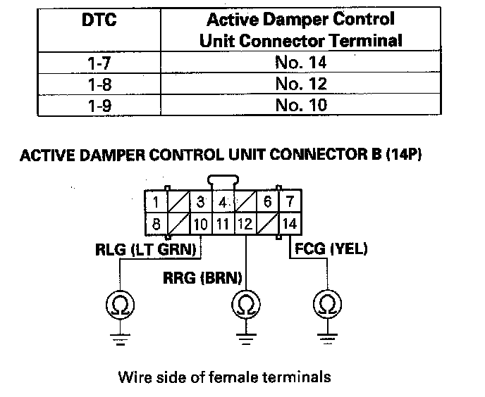
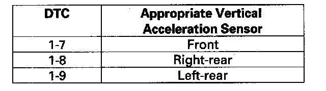
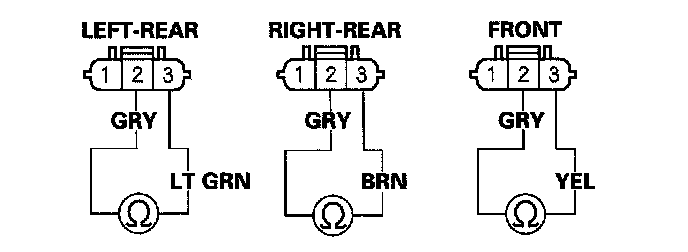
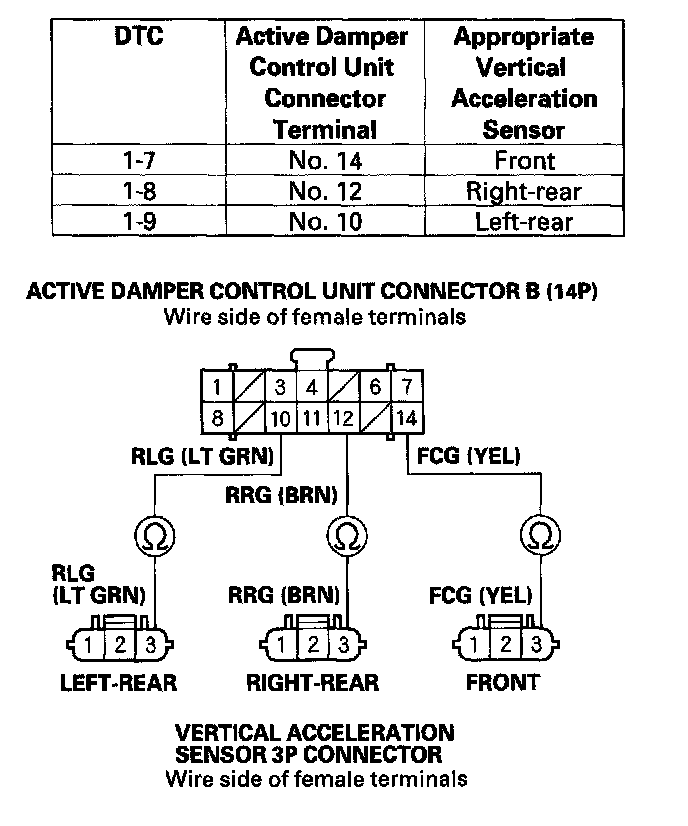
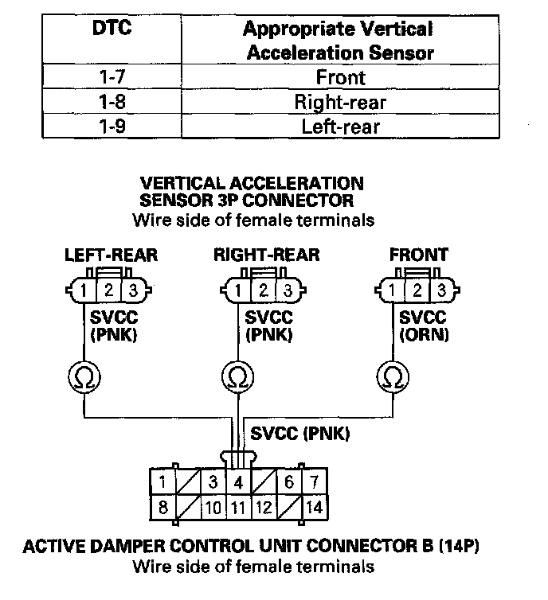

DTC 1-7
DTC 1-7: Front Vertical Acceleration Sensor Circuit Low VoltageDTC 1-8: Right-rear Vertical Acceleration Sensor Circuit Low Voltage
DTC 1-9: Left-rear Vertical Acceleration Sensor Circuit Low Voltage
1. Turn the ignition switch ON (II).
2. Clear the DTC with the HDS.
3. Turn the ignition switch OFF.
4. Start the engine, and wait 5 seconds.
5. Check for DTCs with the HDS.
Is DTC 1-7, 1-8, or 1-9 indicated?
YES - Go to step 6.
NO - Intermittent failure at this time. Check for poor or loose connections between the vertical acceleration sensor and the active damper control unit.
6. Do the appropriate vertical acceleration sensor inspection.

7. Turn the ignition switch OFF.
8. Disconnect active damper control unit connector A (20P) and connector B (14P).
9. Check for continuity between body ground and the appropriate active damper control unit connector B (14P) terminal (see table).

Is there continuity?
YES - Repair short to body ground in the wire between the appropriate vertical acceleration sensor and the active damper control unit.
NO - Go to step 10.
10. Disconnect the appropriate vertical acceleration sensor 3P connector.

11. Check for continuity between the appropriate vertical acceleration sensor terminals No. 2 and No. 3.
Is there continuity?

YES - Repair short in the wires between the appropriate vertical acceleration sensor and the active damper control unit.
NO - Go to step 12.
12. Check for continuity between the appropriate active damper control unit connector B (14P) terminal and the appropriate vertical acceleration sensor 3P connector terminal No. 3 (see table).

Is there continuity?
YES - Go to step 13.
NO - Repair open in the wire between the appropriate vertical acceleration sensor and the active damper control unit.
13. Check for continuity between active damper control unit connector B (14P) terminal No. 4 and appropriate vertical acceleration sensor 3P connector terminal No. 1(see table).

Is there continuity?
YES - Go to step 14.
NO - Repair open in the wire between the appropriate vertical acceleration sensor and the active damper control unit.
14. Reconnect active damper control unit connector A (20P) and connector B (14P).
15. Start the engine, and wait 5 seconds.
16. Measure voltage between body ground and appropriate vertical acceleration sensor 3P connector terminal No. 1.

Is there about 5 V?
YES - Replace the appropriate vertical acceleration sensor.
NO - Replace the active damper control unit.